实习期间主要做的就是RESTCONF，Clixon这个项目是我接触的第一个restconf（也是唯一一个）实现，虽然到后来看这个项目只是给我提供了基本框架的思路，但是当时一开始看这个还是挺费劲的。
记录很详尽但是没什么用，后半段有一些RESTCONF实现的调研，可能后续整理资料的时候会再提取出来，这篇记录应该不会再有改动了。
clixon的安装等去看项目README以及doc目录下。
clixon启动命令
1 | # backend |
debug mode
1 | # run restconf in debug mode |
test curl
1 | new "restconf root discovery. RFC 8040 3.1 (xml+xrd)" |
使用Postman
- 终端
unset http_proxy - Postman 关闭File > Settings > Proxy > Use system proxy
- Postman 关闭**File > Settings > General > SSL Certificate Verification
socket 相关
- 看这一段的目的是为了搞清楚下面两次注册的*ss和s*的区别.
1 | // ss是<CLICON_SOCK>的fd |
服务端：创建socket—绑定文件（端口）—监听—接受客户端连接—接收/发送数据—…—关闭
socket()--bind()--listen()--accept()--read()/write()-------close()客户端：创建socket—绑定文件（端口）—连接—发送/接收数据—…—关闭
socket()--bind()--connect()--read()/write()-------close()1 | ss = backend_socket_init(clicon_handle h) // 连接<CLICON_SOCK> ss = socket |
从restconf连接backend看
调用的机制：没有长连接，每次都是短的连接。
1 | // restconf_main.c 不细讲前面的初始化过程，从main()中最后的死循环开始讲 |
1 | // restconf_main.c 不细讲前面的初始化过程，从main()中最后的死循环开始讲 |
1 | api_restconf(h, r) |
1 | // 这两步从api_path转到xpath |
1 | // 看一下post，post要上传数据好像还不太一样 |
1 | // 这个其实没什么用 |
rpc 角度
注册
rpc_callbackcallback调用（在
event_loop
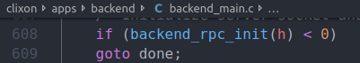
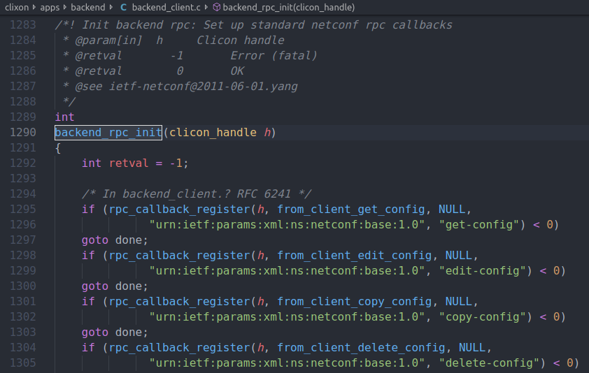
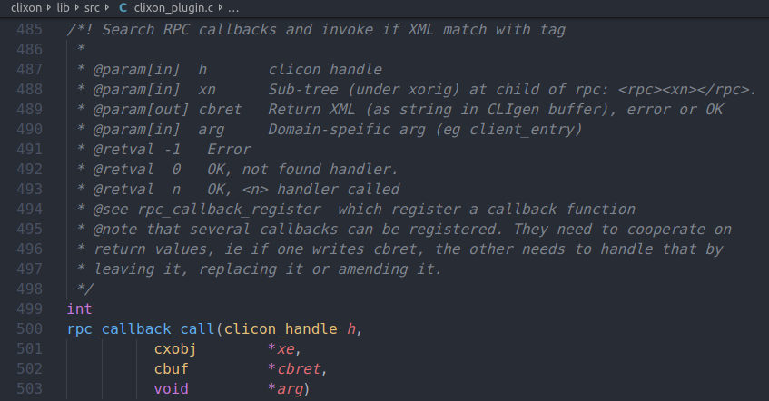
backend event reg & loop
Q
猜想是
event_data的EVENT_FD的条目是检测到相关的fd变化后会去执行该条目的回调函数，但是我还没有看懂event_loop过程.event_loop是main函数最后进去的，里面包含一个while(1)
A
event_reg分为event_reg_fd&event_reg_timeout相应的，event_loop里面存在分开处理这两种机制的两部分。- 下面提到的都是
event_reg_fd的方式 event_reg_timeout用于stream里面，暂时不考虑
- 下面提到的都是
1 | /* |
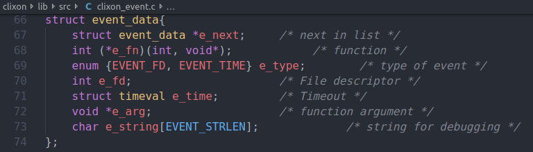

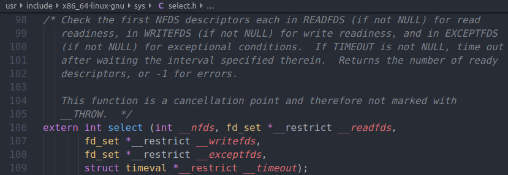
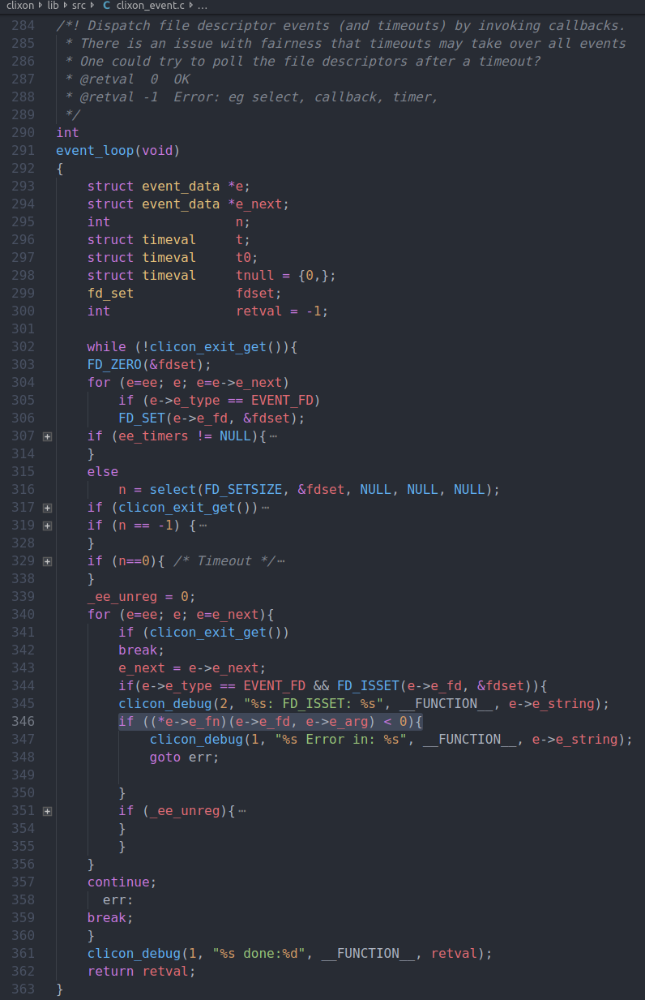
callback 注册流程
- 问题是，
from_client是怎么被触发的，或者说，event_reg_fd+event_loop是怎么处理事件并且调用注册的cb的event_loop写的注释是Dispatch file descriptor events (and timeouts) by invoking callbacks.，我觉得我们用到的不是timeout，那么就应该是fd。- sock连接是怎么被读取的，找sock的read？
- answer：Linux: fd_set用法
- 当调用select()时，由内核根据IO状态修改fd_set的内容，由此来通知执行了select()的进程哪一socket或文件可读。
- select()函数常常用在用一个进程监听多个服务器端socket。
- 后来看到，这种方式实现io监听是比较古老的做法，现在用poll以及epoll性能更好
1 | //首先main中调用 |
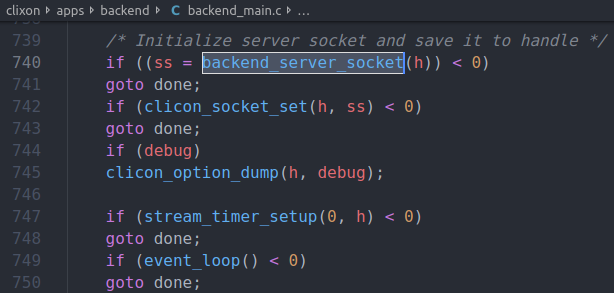
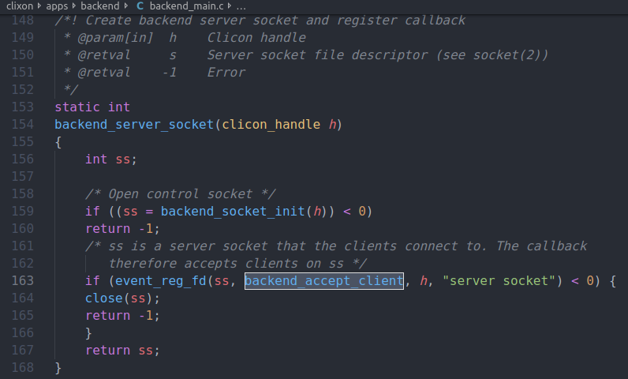
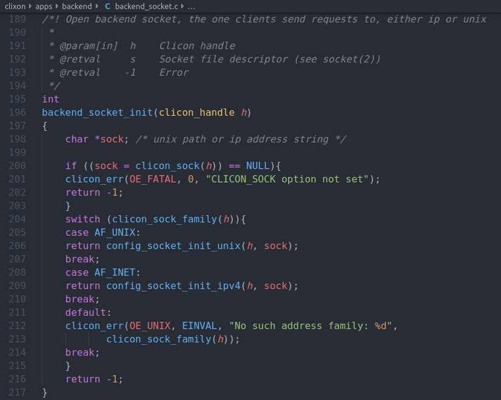
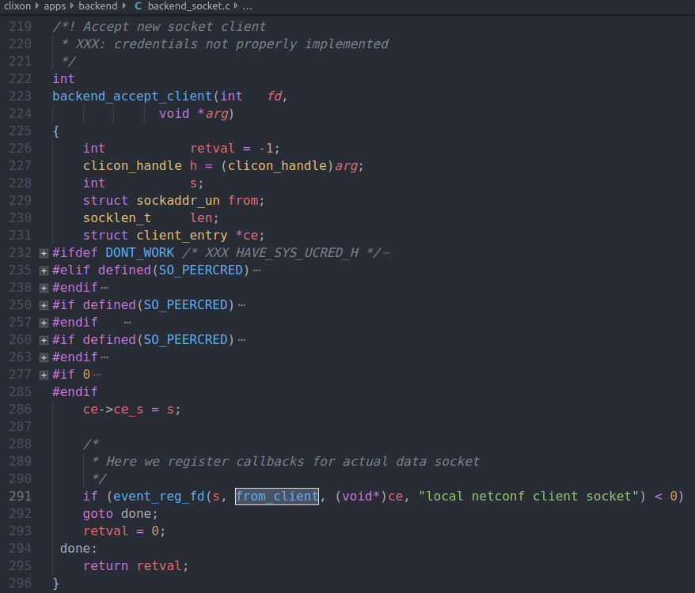
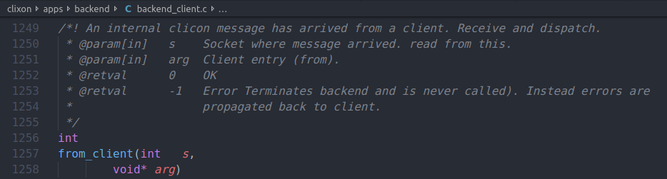
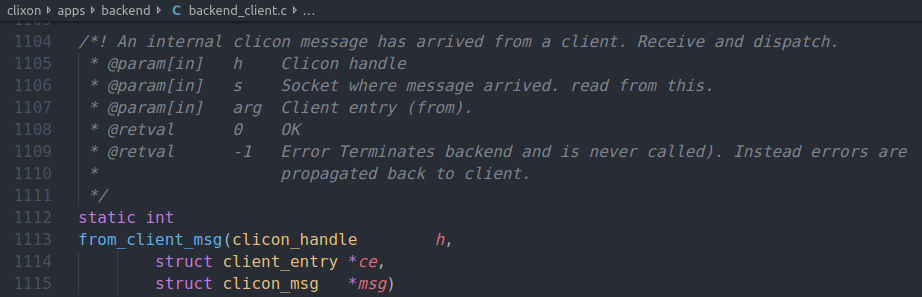
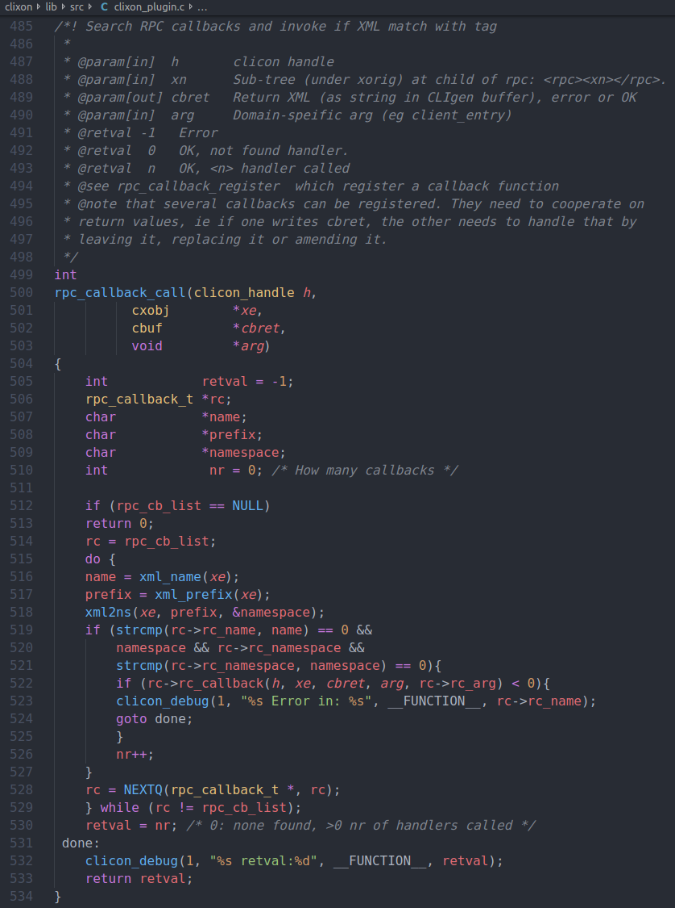
TODO：细看xmldb中的操作
- 对xmldb的操作全部来自
backend_rpc_init中注册的操作。
xml 数据结构
1 | struct xml{ |
xmldb相关操作
1 | //xmldb操作通过rpc_callback来完成，相关的函数在clixon_datastore*中，以下是一个例子 |
1 | /* Here xt looks like: <config>...</config> */ |
1 | // edit 部分会不太一样，涉及lock之类的 TODO |
curl -G http://127.0.0.1/restconf/data
xmldb 调用流程
- 这次我们关注传入参数，涉及yang的部分
- xt means xtop means Top of XML parse tree
1 | // 回顾上面的调用的流程 |
debug
1 | sparta@vostrozhc:~$ tail -f /var/log/syslog | grep clixon_restconf |
长url
1 | Aug 9 14:44:07 vostrozhc clixon_restconf[21683]: ------------ |
authentication
Is BASIC-Auth secure if done over HTTPS?
- at least we should basic -auth over https

- work as a plugin
clixon/examplemain/example_restconf.c是plugin定义的文件
1 | // restconf_main.c/main plugin加载过程 |
1 | // restconf_main.c/api_restconf |
1 | authenticated = clixon_plugin_auth(h, r)) |
1 | // 打开了auth机制 basic_auth = 1 后 |
现在还剩下的问题是，我如何写http header 去通过认证
three hardwired users andy, wilma and guest from RFC8341 A.1 *密码是 *bar**
这个认证机制似乎是http的一个定义好的，可以在postman选这个认证方法
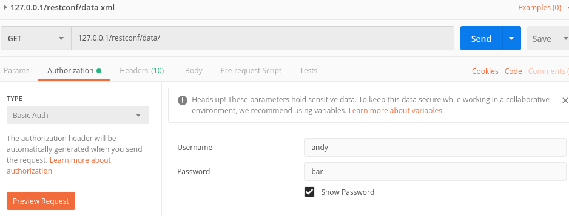
clixon-sysrepo
- 尝试加入sysrepo，失败，问题应该是编译的时候没有加上sysrepo的动态连接库
1 | gcc backend_main.o backend_socket.o backend_client.o backend_commit.o backend_plugin.o backend_startup.o -L. libclixon_backend.so.3.10 -L../../lib/src -ldl -lnsl -lcrypt -lfcgi -lcligen -lm ../../lib/src/libclixon.so.3.10 -lpthread -o clixon_backend |
stream notification
需要在
/usr/local/etc/example.xml里面打开设置=#011 “true” 这样才会加载ietf-restconf-monitoring.yang
1 | # 查询streams信息 |
- 通过查询到的location 订阅 –但是我失败了 404
1 | curl -H "Accept: text/event-stream" -s -X GET http://localhost/streams/EXAMPLE |
1 | // clixon的这个部分是定义在clixon-example.yang里面 对应RFC8040 6.4 |
path2xpath
- restconf要求的url path形式
1 | https://<ADDRESS>/<ROOT>/data/<[YANG MODULE:]CONTAINER>/<LEAF=KEY>[?<OPTIONS>] |
- netconf使用的xpath
1 | /MODULE:CONTAINER/LEAF[KEY=key] |
需要一个转换从path到xpath
clixon的案例：
str2cvec(path, '/', '=', &pcvec) < 0ret = api_path2xpath(yspec, pcvec, pi, cbpath)- clixon第一步先把path用两个标识符打断做成了他的cvec，我也可以用类似的结构体
- 第二步用得到的cvec加上一个offset，配合yang制作成xpath，其实主要是room[room-number=1]这里，需要leaf节点的key值
- 问题是，用来确定leaf的key值不是就一个吗，我用序号不行吗，否则还要问sysrepo拿leaf，很麻烦
- 不行，只有key为数字的时候可以这么干，如果key是string的话就不可以，所以必须问sysrepo拿
所以现在又回到了yang的问题，yang要怎么写，对应怎么样的xpath定位？
leaf-list的问题？
问题：如果没有key呢？ –还不知道
一个list有多个leaf作为key呢？
- 好像每次用一个key检索没问题
问题：restconf不知道它用的是哪一个key，需要找一下匹配？
- A: 如果有多个key，协议规定必须每个key都指定，
一些测试与说明：
- 我修改了building.yang，设定了两个key。
- 然后我edit-config了两个对象，room-number一样，room-name不一样
- 搜索一样的key会出两个
可以通过key的逻辑and or来继续限制 – 不这样做
- 问题：rfc7950 yang协议有没有限制对象的key的唯一性？ A ：要确定的，所有key一起确定同一个对象
1 | > get --filter-xpath "/building:rooms/room[room-number='3']" |
Etag
- etag header 似乎是通过配置nginx来实现的。是http cache机制。
- 但是我改了配置文件也出不来，有可能是和我用的方式也有关系，cache使用环境好像一般是静态网页的加载。
1 | configure arguments: --with-cc-opt='-g -O2 -fPIE -fstack-protector-strong -Wformat -Werror=format-security -Wdate-time -D_FORTIFY_SOURCE=2' --with-ld-opt='-Wl,-Bsymbolic-functions -fPIE -pie -Wl,-z,relro -Wl,-z,now' --prefix=/usr/share/nginx --conf-path=/etc/nginx/nginx.conf --http-log-path=/var/log/nginx/access.log --error-log-path=/var/log/nginx/error.log --lock-path=/var/lock/nginx.lock --pid-path=/run/nginx.pid --http-client-body-temp-path=/var/lib/nginx/body --http-fastcgi-temp-path=/var/lib/nginx/fastcgi --http-proxy-temp-path=/var/lib/nginx/proxy --http-scgi-temp-path=/var/lib/nginx/scgi --http-uwsgi-temp-path=/var/lib/nginx/uwsgi --with-debug --with-pcre-jit --with-ipv6 --with-http_ssl_module --with-http_stub_status_module --with-http_realip_module --with-http_auth_request_module --with-http_addition_module --with-http_dav_module --with-http_geoip_module --with-http_gunzip_module --with-http_gzip_static_module --with-http_image_filter_module --with-http_v2_module --with-http_sub_module --with-http_xslt_module --with-stream --with-stream_ssl_module --with-mail --with-mail_ssl_module --with-threads |